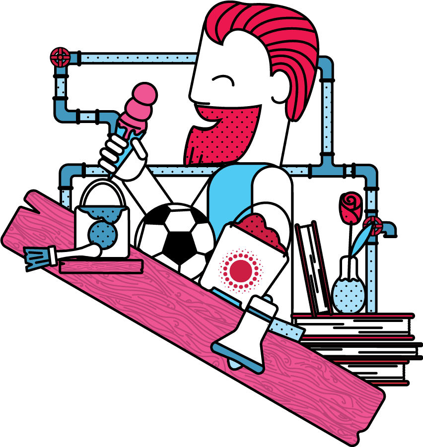
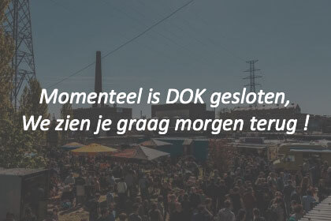
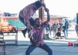
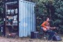
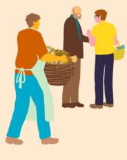
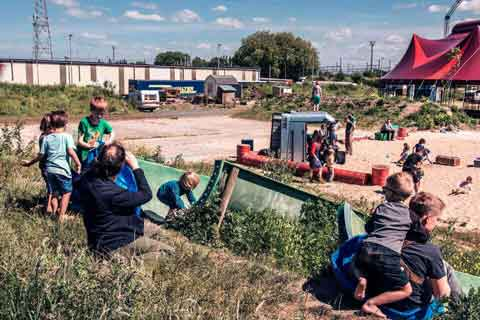
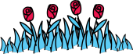
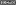
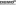
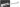

<!DOCTYPE html>
<html lang="en">
<head>

  <meta charset="UTF-8">
  <title>DOK Gent</title>
  <meta name="viewport" content="width=device-width, initial-scale=1"/>
  <link rel="shortcut icon" type="image/png" href="assets/img/favicon.png">

</head>

<body>

  <header>
    <section class="NavSection">
      <section class="topNav">
        <section class="newsdrop">
          <p><span>Vandaag</span><br/>
          Cosy Cozy zorgt tussen 14u en 19u <br />voor meer dan gezellige dj’s.</p>
        </section>

        

        <form class="search">
          <input type="text" name="search" placeholder="Search..">
        </form>

      </section>
    </section>

    <section class="botNav">
        <ul>
          <li>Agenda</li>
          <li>Praktisch</li>
          <li>Zone's</li>
          <li>Over</li>
          <li>Blog</li>
          <li>Livestream</li>
          <li>Join us</li>
        </ul>
    </section>
  </header>
  <main>
    <section class="intro">
      <section class="introTop">
        
        <section class="titel">
          <h2>Werkplek voor verpozing &amp; creatieve manouvres</h2>
          <h1>Dok<span>2017</span></h1>
          <h3>1 mei - 25 sept.</h3>
        </section>
          
      </section>

      <div class="introtekst">
        <p><span>DOK</span> is een ontmoetingsplek voor elke Gentenaar, een hangplek voor piepjong, jong, minder jong en ronduit oud. Maar ook een platform voor creatie en een werkplek, een plaats voor organisaties of indivduen op zoek naar samenwerking en inspirerende kruisbestuivingen.</p>
      </div>

      <section class="sfeerfotos">
        
        
        
        
        <div class="sf1"></div>
        <div class="sf2"></div>
        <div class="sf3"></div>

      </section>
    </section>

    <section class="livestream">
      <h3>Livestream</h3>
      

    <section class="lsInner">
        
        <div class="LsDot"></div>

      <section class="LsInnerInfo">

        <section class="LsInfo">
          <h4>Live Webcam Dok</h4>
          <p class="algInfo">Momenteel zijn er geen evenementen aan de gang waar een livestream op aanwezig is.</p>
        </section>

        <section class="LsOther">
          <p><span>Bekijk andere evenement streams</span></p>
            <section class="LsOtherFlex">

              

              <div class="LsEvenement">
                
                <p class="LsOtherTitle"><span>17/06</span> - Dok DJ CosyCozy</p>
                <p class="duration">18:04</p>
              </div>

              <div class="LsEvenement">
                
                <p class="LsOtherTitle"><span>17/06</span> - Les Frères troubouch</p>
                <p class="duration">23:40</p>
              </div>

              <div class="LsEvenement">
                
                <p class="LsOtherTitle"><span>16/06</span> - Dok Moestuin</p>
                <p class="duration">16:57</p>
              </div>

              
          </section>
        </section>
      </section>
    </section>
      </section>

    <section class="joinUs">
      <h3>Join us</h3>
      <article class="dokkeuken">
        
        <div class="DkBol"></div>
        <section class="DkInfo">
          <h4>Dokkeuken</h4>
          <p>Wisselkeuken is een gedeelde horecaruimte waar koks en culinair geïnteresseerden die de mogelijkheid krijgen om hun concept uit te proberen of te experimenteren met voeding. Het is de bedoeling dat je je eigen benodigdheden en materiaal voorziet (geen wegwerp). Deze ruimte kan je gebruiken voor een onbepaalde periode, naargelang de noden van je idee of concept.</p>
          <p><span>Aanvraag Dokkeuken</span></p>
        </section>
      </article>

      <article class="dokbewoners">
        
        <div class="DbBol"></div>
        <section class="DbInfo">
          <h4>Dokbewoners</h4>
          <p>DOK opent zijn deur voor zowel individuen en buurtbewoners als voor bedrijven, collectieven of organisaties. Wat er gebeurt op DOK wordt bepaald door de DOKbewoners. Voor het nieuwe seizoen is DOK altijd op zoek naar nieuwe DOKbewoners, residents, die DOK 2017 mee vorm en kleur willen geven met  creatieve manoeuvres</p>
          <p><span>Aanvraag dokbewoners</span></p>
        </section>
      </article>

      <p class="JuOther">Bekijk andere mogelijke applicaties</p>
    </section>

    <section class="blog">
      <h3>Blog</h3>
      <section class="BlogInner">
        <article class="blog1">
          <p class="BlogTitel">Een blik op dok 2016</p>
          
          <p class="blogTekst">DOK gaat in een diepe winterslaap, maar zijn DOKbewoners zijn dat allerminst van plan. We geven je graag een overzicht van wat iedereen zoal van plan is, het komende jaar..</p>
          <p class="blogDoorklik">Lees meer</p>
          <p><span>#DOKbewoner</span><span>#DOK2016</span></p>
        </article>

        <article class="blog2">
          <p class="BlogTitel">De buurderij</p>
          
          <p class="blogTekst">De Buurderij is dé manier om al je voedsel rechtstreeks bij de boer of producent te kopen. Nooit meer naar de supermarkt, een eerlijk inkomen voor wie het voedsel produceert..</p>
          <p class="blogDoorklik">Lees meer</p>
          <p><span>#Buurderij</span><span>#DOK2016</span><span></span></p>
        </article>

        <article class="blog3">
          <p class="BlogTitel">Dok gaat door in 2017 en 2018 &#33;</p>
          
          <p class="blogTekst">In de zomers van 2017 en 2018 zal DOK de intussen bekende site aan de Schipperskaai in de Gentse Oude Dokken weer kunnen innemen..</p>
          <p class="blogDoorklik">Lees meer</p>
          <p><span>#Oudedokken</span><span>#DOK2016</span></p>
        </article>
      </section>
    </section>

    <section class="socials">
      <h3>#DOK2017</h3>
      <ul>

        <li>
          <article class="social1">
            

            <div class="socialPostOverlay">
              
            </div>

              <div class="profielInfo">
                
                <p class="socialname">Jynse cremers</p>
              </div>
          </article>
        </li>

        <li>
          <article class="social2">
            
            <div class="socialPostOverlay">
            
</div>
              <div class="profielInfo">
                
                <p class="socialname">Ellen De Rycke</p>
              </div>

          </article>
        </li>

        <li>
          <article class="social3">
            
            <div class="socialPostOverlay">
            
          </div>
            <div class="profielInfo">
              
              <p class="socialname">Wouter Verweirder</p>
            </div>
          </article>
        </li>

        <li>
          <article class="social4">
            
            <div class="socialPostOverlay">
            
  </div>
            <div class="profielInfo">
              
              <p class="socialname">Geoffrey Dhuyvetters</p>
            </div>

          </article>

        </li>

        <li>
          <article class="social5">
            
            <div class="socialPostOverlay">
            
          </div>
            <div class="profielInfo">
              
              <p class="socialname">Filip Joos</p>
            </div>

          </article>
        </li>

      </ul>
    </section>
  </main>

  <footer>
    

    <div class="footerTop">
      <section class="Fnewsletter">
        <h5>Nieuwsbrief</h5>

        <p>Wil je op de hoogte blijven van geplande evenementen?<br />Schrijf je dan in voor onze nieuwsbrief</p>

        <form action="action_page.php">
          <input type="email" name="email" placeholder="info@DOKgent.be">
          <input type="submit">
        </form>
      </section>
      <section class="Fsocialmedia">
        
        
        
      </section>
    </div>

    <div class="footerDot"></div>

    <div class="footerMid">
      <h5>Sponsers</h5>
      <div class="sponsersImg">
        
        
        
        
        
        
        
        
        
        
      </div>
    </div>
  </footer>
</body>

</html>
